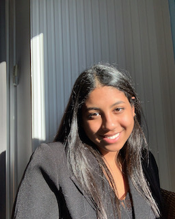

Hello, welcome to my world !
Short description of myself, I am a student at ESSEC Business School, I am 19 years old and I live near Paris. I have a multitude of things to teel you about me, so don’t go away now ! Oh and please call me Riri. ♡
Netflix & ChillWhat do I like ?

A few things… I can tell you a little bit about it.
Travelling ✈
Travelling is very precious to me. I dream of going around the world to discover other cultures than mine. I hope to be lucky enough to have a job that allows me to travel ! Until today, I had the chance to travel to many different countries but I am never satisfied… I always want more, I always want to get better, I always want to climb another step !
The Anime World ⭒
I am in love with anime. I watch a lot of them and no matter what other people think, I learn a lot about life and how to face it. There is something for everyone but my favorite is definitely One Piece. His most inspiring quote to me is : “Passion and dreams are like time, nothing can stop them, and it will be like that as long as there are men willing to give meaning to the word : " FREEDOM " .
Sport & Music ♫
I have been playing basketball for 6 years and I am a fan of it. I love playing and watching games. I watch a little bit of the NBA but I don’t really have a favorite player (rest in peace Kobe, the Black Mamba ). It’s funny but I associate basketball with music. I like to listen to US rap music during practice, or even when I go for a run. In fact, I listen to music morning, noon and night… music accompanies me in a big part of my life !
My family & My friends ღ
I love them more than anything. I love going out with them, having fun and laughing. I will go with them to the end of the world ! I’d rather have friends than a lover (am I really sure that ? haha) as they say if love is the strongest thing in the world, then friendship is invincible. Special mention to my cat Lilo, I love him too so much.
Working 〄
I work hard to achieve my goals. I dream to be an entrepreneur and to fully develop my business. I would like to change the world in my own way and even if it is tough, Horace Mann said it : “Be ashamed to die until you have won some victory for humanity.”
Oh and if you still haven’t noticed I love quotes haha.